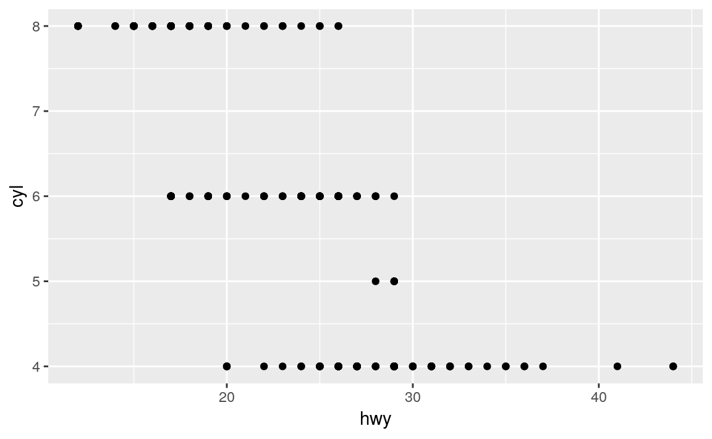
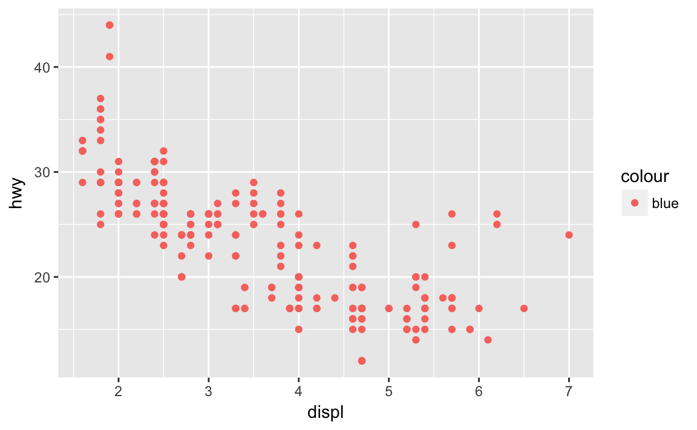
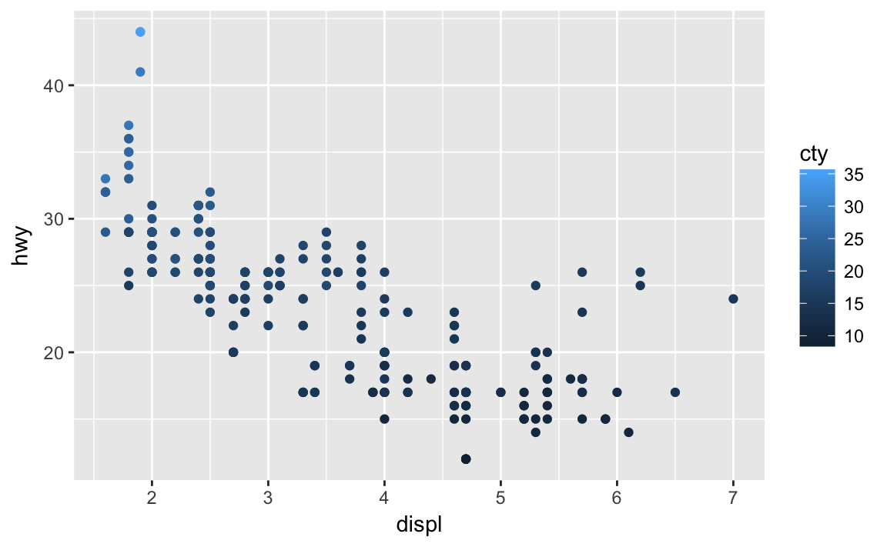
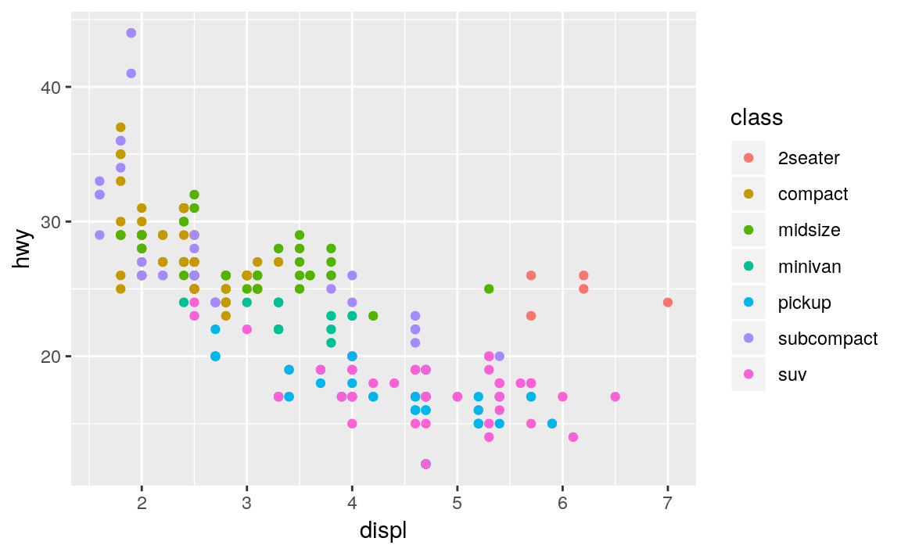

2 Visualize
2.1 Introduction
2.1.1 Prerequisites
library("tidyverse")Other resources
- All the graph things Stat 545. Jenny Bryan.
2.1.2 First Steps
2.1.2.1 Exercises
- Run ggplot(data = mpg) what do you see?
ggplot(data = mpg)
Nothing. The plot is created, but ggplot is not given any data to plot.
- How many rows are in
mtcars? How many columns?
nrow(mtcars)
#> [1] 32
ncol(mtcars)
#> [1] 11This can also be found by printing the dataset, or looking in the environment pane.
- What does the drv variable describe? Read the help for
?mpgto find out.
?mpgThe drv variable takes the following values
- f = front-wheel drive
- r = rear wheel drive
- 4 = 4wd
- Make a scatterplot of
hwyvscyl
ggplot(mpg, aes(x = hwy, y = cyl)) +
geom_point()
- What happens if you make a scatterplot of
classvsdrv. Why is the plot not useful?
ggplot(mpg, aes(x = class, y = drv)) +
geom_point()
A scatterplot is not a useful way to plot these variables, since both drv and class are factor variables, and the scatterplot cannot show which are overlapping or not.
count(mpg, drv, class)
#> Source: local data frame [12 x 3]
#> Groups: drv [?]
#>
#> drv class n
#> <chr> <chr> <int>
#> 1 4 compact 12
#> 2 4 midsize 3
#> 3 4 pickup 33
#> 4 4 subcompact 4
#> 5 4 suv 51
#> 6 f compact 35
#> # ... with 6 more rows2.1.3 Aesthetic mappings
2.1.3.1 Exercises
- What’s gone wrong with this code? Why are the points not blue?
ggplot(data = mpg) +
geom_point(mapping = aes(x = displ, y = hwy, color = "blue"))
Since color = "blue" was included within the mapping argument, it was treated as an aesthetic (a mapping between a variable and a value). It was treated as a variable which has only one value: “blue”.
- Which variables in mpg are categorical? Which variables are continuous? (Hint: type ?mpg to read the documentation for the dataset). How can you see this information when you run mpg?
?mpgWhen printing the data frame, this information is given at the top of each column within angled brackets. Categorical variables have a class of “character” (<chr>).
mpg
#> # A tibble: 234 × 11
#> manufacturer model displ year cyl trans drv cty hwy fl
#> <chr> <chr> <dbl> <int> <int> <chr> <chr> <int> <int> <chr>
#> 1 audi a4 1.8 1999 4 auto(l5) f 18 29 p
#> 2 audi a4 1.8 1999 4 manual(m5) f 21 29 p
#> 3 audi a4 2.0 2008 4 manual(m6) f 20 31 p
#> 4 audi a4 2.0 2008 4 auto(av) f 21 30 p
#> 5 audi a4 2.8 1999 6 auto(l5) f 16 26 p
#> 6 audi a4 2.8 1999 6 manual(m5) f 18 26 p
#> # ... with 228 more rows, and 1 more variables: class <chr>The glimpse command from “mpg” shows this:
glimpse(mpg)
#> Observations: 234
#> Variables: 11
#> $ manufacturer <chr> "audi", "audi", "audi", "audi", "audi", "audi", "...
#> $ model <chr> "a4", "a4", "a4", "a4", "a4", "a4", "a4", "a4 qua...
#> $ displ <dbl> 1.8, 1.8, 2.0, 2.0, 2.8, 2.8, 3.1, 1.8, 1.8, 2.0,...
#> $ year <int> 1999, 1999, 2008, 2008, 1999, 1999, 2008, 1999, 1...
#> $ cyl <int> 4, 4, 4, 4, 6, 6, 6, 4, 4, 4, 4, 6, 6, 6, 6, 6, 6...
#> $ trans <chr> "auto(l5)", "manual(m5)", "manual(m6)", "auto(av)...
#> $ drv <chr> "f", "f", "f", "f", "f", "f", "f", "4", "4", "4",...
#> $ cty <int> 18, 21, 20, 21, 16, 18, 18, 18, 16, 20, 19, 15, 1...
#> $ hwy <int> 29, 29, 31, 30, 26, 26, 27, 26, 25, 28, 27, 25, 2...
#> $ fl <chr> "p", "p", "p", "p", "p", "p", "p", "p", "p", "p",...
#> $ class <chr> "compact", "compact", "compact", "compact", "comp...- Map a continuous variable to color, size, and shape. How do these aesthetics behave differently for categorical vs. continuous variables?
The variable cty, city highway miles per gallon, is a continuous variable:
ggplot(mpg, aes(x = displ, y = hwy, color = cty)) +
geom_point()
Instead of using discrete colors, the continous variable uses a scale that goes from black to bluish.
ggplot(mpg, aes(x = displ, y = hwy, size = cty)) +
geom_point()
When mapped to size, the sizes of the points vary continuously with respect to the size (although the legend shows a few representative values)
ggplot(mpg, aes(x = displ, y = hwy, shape = cty)) +
geom_point()
#> Error: A continuous variable can not be mapped to shape
When a continuous value is mapped to shape, it gives an error. Though we could split a continuous variable into discrete categories and use shape, this would conceptually not make sense. A continuous numeric variable is ordered, but shapes have no natural order. It is clear that smaller points correspond to smaller values, or once the color scale is given, which points are larger or smaller. But it is not clear whether a square is greater or less than a circle.
- What happens if you map the same variable to multiple aesthetics?
ggplot(mpg, aes(x = displ, y = hwy, color = hwy, size = displ)) +
geom_point()
In the above plot, hwy is mapped to both location on the y-axis and color, and displ is mapped to both location on the x-axis and size. The code works and produces a plot, even if it is a bad one. Mapping a single variable to multiple aesthetics is redundant. Because it is redundant information, in most cases avoid mapping a single variable to multiple aesthetics.
- What does the stroke aesthetic do? What shapes does it work with? (Hint: use
?geom_point)
The following example is given in ?geom_point:
ggplot(mtcars, aes(wt, mpg)) +
geom_point(shape = 21, colour = "black", fill = "white", size = 5, stroke = 5)
Stroke changes the color of the border for shapes (22-24).
- What happens if you map an aesthetic to something other than a variable name, like
aes(colour = displ < 5)?
ggplot(mpg, aes(x = displ, y = hwy, colour = displ < 5)) +
geom_point()
Aesthetics can also be mapped to expressions (code like displ < 5). It will create a temporary variable which takes values from the result of the expression. In this case, it is logical variable which is TRUE or FALSE. This also explains exercise 1, color = "blue" created a categorical variable that only had one category: “blue”.
2.1.4 Facets
2.1.4.1 Exercises
- What happens if you facet on a continuous variable?
Let’s see
ggplot(mpg, aes(x = displ, y = hwy)) +
geom_point() +
facet_grid(. ~ cty)
It converts the continuous varible to a factor and creates facets for all unique values of it.
- What do the empty cells in plot with
facet_grid(drv ~ cyl)mean? How do they relate to this plot?
They are cells in which there are no values of the combination of drv and cyl.
ggplot(data = mpg) +
geom_point(mapping = aes(x = drv, y = cyl))
The locations in the above plot without points are the same cells in facet_grid(drv ~ cyl) tha have no points.
- What plots does the following code make? What does
.do?
The symbol . ignores that dimension for faceting.
This plot facets by values of drv on the y-axis:
ggplot(data = mpg) +
geom_point(mapping = aes(x = displ, y = hwy)) +
facet_grid(drv ~ .) This plot facets by values of
This plot facets by values of cyl on the x-axis:
ggplot(data = mpg) +
geom_point(mapping = aes(x = displ, y = hwy)) +
facet_grid(. ~ cyl)
- Read
?facet_wrap. What doesnrowdo? What doesncoldo? What other options control the layout of the individual panels? Why doesn’tfacet_grid()havenrowandncolvariables?
The arguments nrow (ncol) determines the number of rows (columns) to use when laying out the facets. It is necessary since facet_wrap only facets on one variable. These arguments are unnecessary for facet_grid since the number of rows and columns are determined by the number of unique values of the variables specified.
- When using
facet_grid()you should usually put the variable with more unique levels in the columns. Why?
You should put the variable with more unique levels in the columns if the plot is laid out landscape. It is easier to compare relative levels of y by scanning horizontally, so it may be easier to visually compare these levels. I’m actually not sure about the correct answer to this.
2.1.5 Geometric Objects
- What does show.legend = FALSE do? What happens if you remove it? Why do you think I used it earlier in the chapter?
NOTE This doesn’t appear earlier in the chapter Issue #510
- What does the
seargument togeom_smooth()do?
It adds standard error bands to the lines.
ggplot(data = mpg, mapping = aes(x = displ, y = hwy, color = drv)) +
geom_point() +
geom_smooth(se = TRUE)
#> `geom_smooth()` using method = 'loess'
By default se = TRUE:
ggplot(data = mpg, mapping = aes(x = displ, y = hwy, color = drv)) +
geom_point() +
geom_smooth()
#> `geom_smooth()` using method = 'loess'
- Will these two graphs look different? Why/why not?
No. Because both geom_point and geom_smooth use the same data and mappings. They will inherit those options from the ggplot object, and thus don’t need to specified again (or twice).
ggplot(data = mpg, mapping = aes(x = displ, y = hwy)) +
geom_point() +
geom_smooth()
#> `geom_smooth()` using method = 'loess'
ggplot() +
geom_point(data = mpg, mapping = aes(x = displ, y = hwy)) +
geom_smooth(data = mpg, mapping = aes(x = displ, y = hwy))
#> `geom_smooth()` using method = 'loess'
- Recreate the R code necessary to generate the following graphs.
ggplot(mpg, aes(x = displ, y = hwy)) +
geom_point() +
geom_smooth(se = FALSE)
#> `geom_smooth()` using method = 'loess'
ggplot(mpg, aes(x = displ, y = hwy)) +
geom_point() +
geom_smooth(mapping = aes(group = drv), se = FALSE)
#> `geom_smooth()` using method = 'loess'
ggplot(mpg, aes(x = displ, y = hwy, colour = drv)) +
geom_point() +
geom_smooth(se = FALSE)
#> `geom_smooth()` using method = 'loess'
ggplot(mpg, aes(x = displ, y = hwy)) +
geom_point(mapping = aes(colour = drv)) +
geom_smooth(se = FALSE)
#> `geom_smooth()` using method = 'loess'
ggplot(mpg, aes(x = displ, y = hwy)) +
geom_point(aes(colour = drv)) +
geom_smooth(aes(linetype = drv), se = FALSE)
#> `geom_smooth()` using method = 'loess'
ggplot(mpg, aes(x = displ, y = hwy, fill = drv)) +
geom_point(color = "white", shape = 21)
2.1.6 Statistical Transformations
- What is the default geom associated with
stat_summary()? How could you rewrite the previous plot to use that geom function instead of the stat function?
The default geom for stat_summary is geom_pointrange (see the stat) argument.
But, the default stat for geom_pointrange is identity, so use geom_pointrange(stat = "summary").
ggplot(data = diamonds) +
geom_pointrange(
mapping = aes(x = cut, y = depth),
stat = "summary",
)
#> No summary function supplied, defaulting to `mean_se()
The default message says that stat_summary uses the mean and sd to calculate the point, and range of the line. So lets use the previous values of fun.ymin, fun.ymax, and fun.y:
ggplot(data = diamonds) +
geom_pointrange(
mapping = aes(x = cut, y = depth),
stat = "summary",
fun.ymin = min,
fun.ymax = max,
fun.y = median
)
- What does
geom_col()do? How is it different togeom_bar()?
geom_col differs from geom_bar in its default stat. geom_col has uses the identity stat. So it expects that a variable already exists for the height of the bars. geom_bar uses the count stat, and so will count observations in groups in order to generate the variable to use for the height of the bars.
- Most geoms and stats come in pairs that are almost always used in concert. Read through the documentation and make a list of all the pairs. What do they have in common?
See the ggplot2 documentation
- What variables does
stat_smooth()compute? What parameters control its behaviour?
stat_smooth calculates
y: predicted valueymin: lower value of the confidence intervalymax: upper value of the confidence intervalse: standard error
There’s parameters such as method which determines which method is used to calculate the predictions and confidence interval, and some other arguments that are passed to that.
- In our proportion bar chart, we need to set
group = 1Why? In other words what is the problem with these two graphs?
If group is not set to 1, then all the bars have prop == 1. The function geom_bar assumes that the groups are equal to the x values, since the stat computes the counts within the group.
ggplot(data = diamonds) +
geom_bar(mapping = aes(x = cut, y = ..prop..))
The problem with these two plots is that the proportions are calculated within the groups.
ggplot(data = diamonds) +
geom_bar(mapping = aes(x = cut, y = ..prop..))
ggplot(data = diamonds) +
geom_bar(mapping = aes(x = cut, fill = color, y = ..prop..))

This is more likely what was intended:
ggplot(data = diamonds) +
geom_bar(mapping = aes(x = cut, y = ..prop.., group = 1))
ggplot(data = diamonds) +
geom_bar(mapping = aes(x = cut, fill = color, y = ..prop.., group = color))

2.2 Position Adjustments
- What is the problem with this plot? How could you improve it?
There is overplotting because there are multiple observations for each combination of cty and hwy.
ggplot(data = mpg, mapping = aes(x = cty, y = hwy)) +
geom_point() I’d fix it by using a jitter positition adjustment.
I’d fix it by using a jitter positition adjustment.
ggplot(data = mpg, mapping = aes(x = cty, y = hwy)) +
geom_point(position = "jitter")
- What parameters to
geom_jitter()control the amount of jittering?
From the position_jitter documentation, there are two arguments to jitter: width and height, which control the amount of vertical and horizontal jitter.
No horizontal jitter
ggplot(data = mpg, mapping = aes(x = cty, y = hwy)) +
geom_point(position = position_jitter(width = 0))
Way too much vertical jitter
ggplot(data = mpg, mapping = aes(x = cty, y = hwy)) +
geom_point(position = position_jitter(width = 0, height = 15))
Only horizontal jitter:
ggplot(data = mpg, mapping = aes(x = cty, y = hwy)) +
geom_point(position = position_jitter(height = 0))
Way too much horizontal jitter:
ggplot(data = mpg, mapping = aes(x = cty, y = hwy)) +
geom_point(position = position_jitter(height = 0, width = 20))
Compare and contrast
geom_jitter()withgeom_count().What’s the default position adjustment for
geom_boxplot()? Create a visualisation of the mpg dataset that demonstrates it.
The default position for geom_boxplot is position_dodge (see its docs).
When we add color = class to the boxplot, the different classes within drv are placed side by side, i.e. dodged. If it was position_identity, they would be overlapping.
ggplot(data = mpg, aes(x = drv, y = hwy, color = class)) +
geom_boxplot()
ggplot(data = mpg, aes(x = drv, y = hwy, color = class)) +
geom_boxplot(position = "identity")
2.3 Coordinate Systems
2.3.1 Exercises
- Turn a stacked bar chart into a pie chart using
coord_polar().
This is a stacked bar chart with a single category
ggplot(mpg, aes(x = factor(1), fill = drv)) +
geom_bar()
See the documentation for coord_polar for an example of making a pie chart. In particular, theta = "y", meaning that the angle of the chart is the y variable has to be specified.
ggplot(mpg, aes(x = factor(1), fill = drv)) +
geom_bar(width = 1) +
coord_polar(theta = "y")
If theta = "y" is not specified, then you get a bullseye chart
ggplot(mpg, aes(x = factor(1), fill = drv)) +
geom_bar(width = 1) +
coord_polar()
If you had a multiple stacked bar chart, like,
ggplot(data = diamonds) +
geom_bar(mapping = aes(x = cut, fill = clarity), position = "fill")
you end up with a multi-donut chart
ggplot(data = diamonds) +
geom_bar(mapping = aes(x = cut, fill = clarity), position = "fill") +
coord_polar(theta = "y")
- What does
labs()do? Read the documentation.
labs is a shortcut function to add labels to different scales.
ggplot(data = mpg, mapping = aes(x = class, y = hwy)) +
geom_boxplot() +
coord_flip() +
labs(y = "Highway MPG", x = "")
- What’s the difference between
coord_quickmap()andcoord_map()?
See the docs:
coord_mapuses a 2D projection: by default the Mercatur project of the sphere to the plot. But this requires transforming all geoms.coord_quickmapuses a quick approximation by using the lat/long ratio as an approximation. This is “quick” because the shapes don’t need to be transformed.
- What does the plot below tell you about the relationship between city and highway mpg? Why is
coord_fixed()important? What doesgeom_abline()do?
The coordinates coord_fixed ensures that the abline is at a 45 degree angle, which makes it easy to compare the highway and city mileage against what it would be if they were exactly the same.
ggplot(data = mpg, mapping = aes(x = cty, y = hwy)) +
geom_point() +
geom_abline() +
coord_fixed()
If we didn’t include geom_point, then the line is no longer at 45 degrees:
ggplot(data = mpg, mapping = aes(x = cty, y = hwy)) +
geom_point() +
geom_abline()